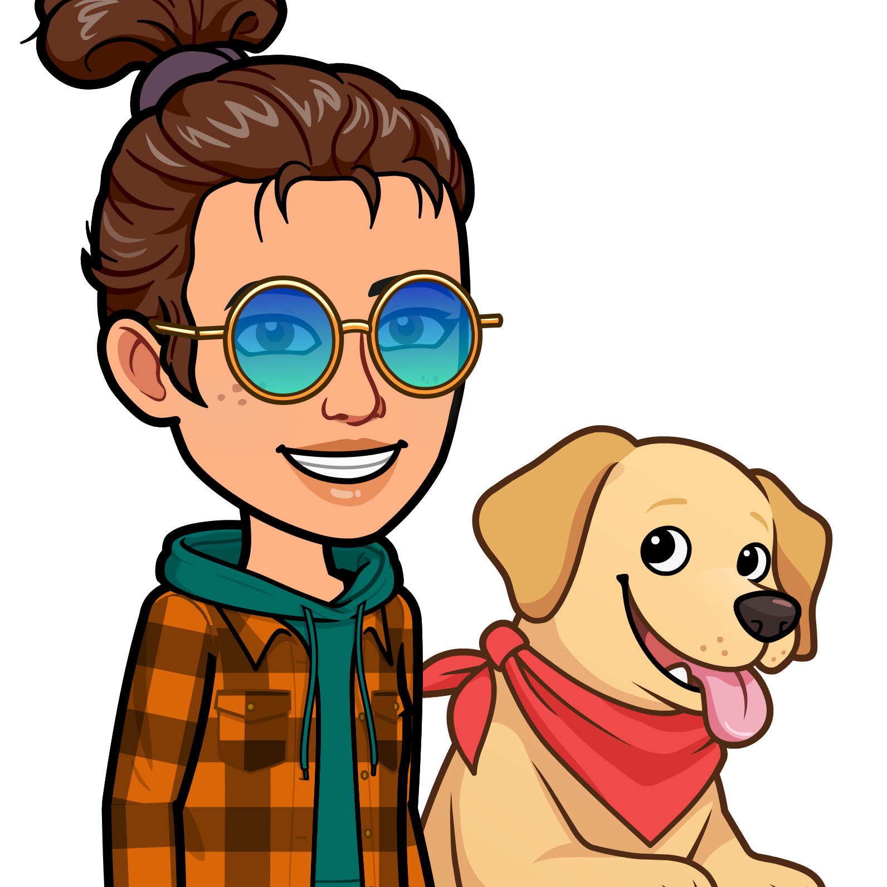

Hi There!
I'm Jasline!
Blending expertise in product management, front-end development, data analytics, and
UI/UX design, I orchestrate seamless digital experiences. As a product manager, I
lead planning sessions, refine roadmaps, and manage backlogs. In front-end development,
I craft captivating interfaces using VS Code, GitHub, JavaScript, React.js, and Node.js.
Proficient in data analytics with Python, SQL, and Excel, I uncover insights to drive strategic
decisions. My UI/UX design skills, honed with Figma and Adobe, ensure intuitive wireframes and
engaging visuals. From concept to delivery, I'm committed to creating digital solutions that
captivate and inspire.
